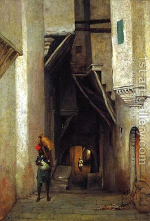

Bava Metzia 83 - Negligent Porters Break a Keg of Wine
Rabbah bar bar Chanan hired porters to carry a keg of wine, and they broke it through negligence, such as stumbling on level ground. Rabbah bar bar Chanan took their cloaks as payment.
The porters went to the court of Rav and told him about it. Rav said to Rabbah bar bar Chanan, "Give them back their cloaks." "Is that the law?" - he asked. "Yes," - said Rav, quoting from Proverbs, " In order that you go on the path of good people ..."
They said to Rav, "We are poor people, and we labored the entire day; we are starving and have nothing to eat." Rav said to Rabbah bar bar Chanan, "Pay them their fee." "Is that the law?" - he asked. "Yes," - said Rav, quoting the end of the phrase, "...and keep the ways of the righteous."